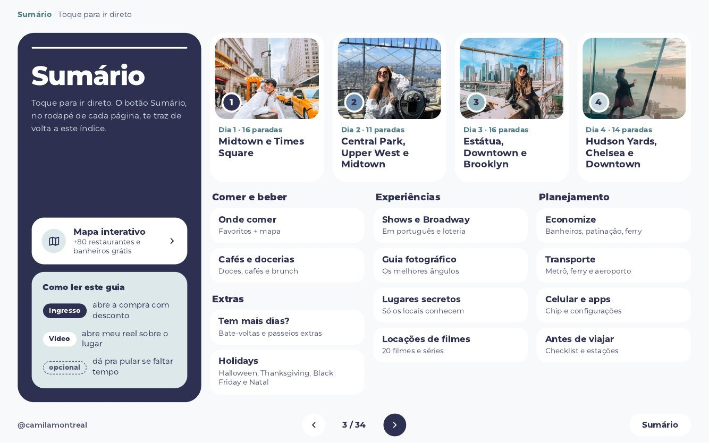
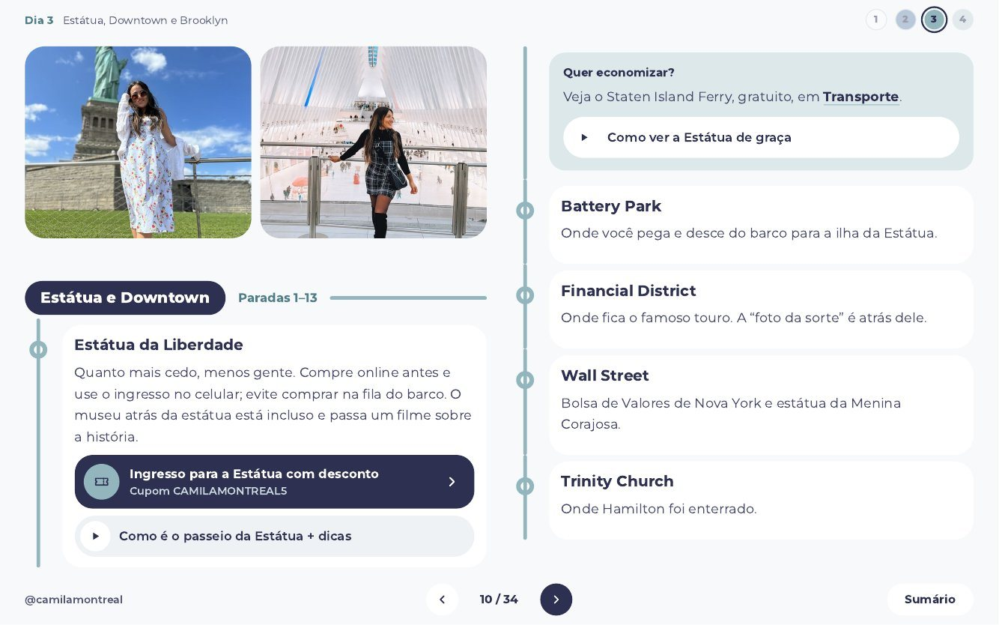
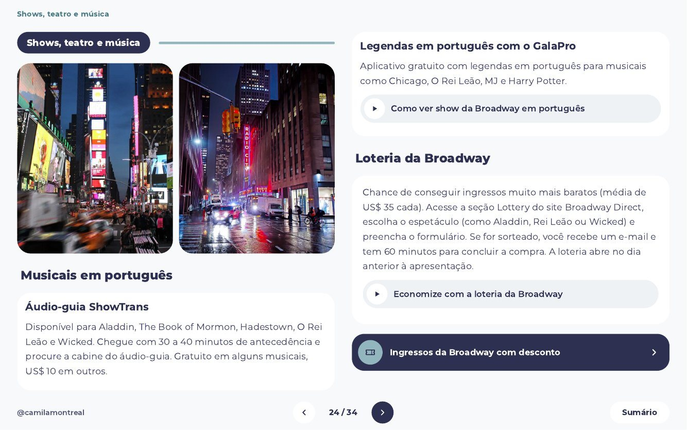
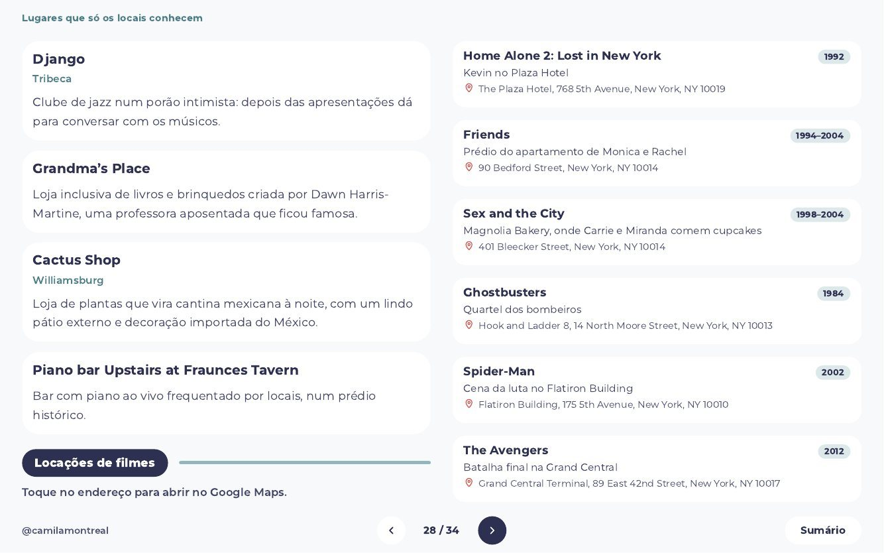

Nova York organizada,
para você aproveitar mais e planejar menos.
Um roteiro de 4 dias, dividido por região, com as minhas dicas, atalhos e links de reserva, tudo em um só guia.
Midtown e Times Square
- Grand Central Terminal · Segredo: Whispering GalleryDe costas para o relógio, siga pelo arco à direita (saída Lexington), vire à direita e desça a rampa. Cada pessoa fala num canto do arco e a outra ouve do lado oposto.
- Summit One VanderbiltVisite no primeiro horário para evitar multidões.
- Biblioteca Pública de Nova York
- Bryant ParkAproveite as barraquinhas e a pista de patinação no inverno.
Quantos dias você fica em Nova York?
4 dias: Midtown, Central Park, Estátua, Brooklyn e Hudson Yards
É a soma das paradas dos dias do guia que cabem na sua viagem: 16 no Dia 1, 11 no Dia 2, 16 no Dia 3 e 14 no Dia 4. As paradas marcadas como opcionais podem ficar de fora se faltar tempo.
Planejar dá trabalho. Aqui está tudo por região, com  a hora certa, o que vale
a hora certa, o que vale  e onde economizar.
e onde economizar.


Whispering Gallery
De costas para o relógio, siga pelo arco à direita (saída Lexington), vire à direita e desça a rampa. Cada pessoa fala num canto do arco e a outra ouve do lado oposto.
O que tem dentro
Tudo para planejar Nova York em um só lugar, do primeiro dia ao celular.
Roteiro de 4 dias
57 paradas, por região, em manhã, tarde e noite.
Comer e beber
Mais de 80 recomendações no mapa interativo, com uma aba só de banheiros gratuitos.

Guia fotográfico
Ângulos e horários para Times Square e Ponte do Brooklyn.
Locações de filmes
20 lugares com endereço que abre no Google Maps.

Economize
Ferry grátis, loteria da Broadway e preços das pistas de patinação.
Épocas do ano
Halloween, Thanksgiving, Black Friday e Natal.
Transporte e celular
Metrô, ferry, trem do aeroporto, chip, apps e mapas offline.
Páginas reais do guia
É assim que você vai usar: sumário clicável, paradas por período do dia, links de reserva e vídeos.






Sumário: toque e vá direto para o dia ou a seção que você precisa.
Erros para evitar
6 dicas do guia
Trem do aeroporto
Eu comprei o bilhete errado, perdi o certo e gastei US$ 200 na primeira hora. O guia manda pesquisar o bilhete exato antes de embarcar.

Estátua da Liberdade
Sem desembarque na ilha, o Staten Island Ferry é gratuito. O guia diz como chegar e de que lado sentar.
Ingresso de Broadway
A loteria dá chance de ingressos bem mais baratos, e há áudio-guia e legendas em português para vários musicais.

Café mais caro do que precisava
Antes de pedir, procure promoções na porta. Eu paguei US$ 2 em vez de 4 só perguntando.
Patinação no gelo
Preço de cada pista, e qual delas tem entrada grátis: no Bryant Park você paga só o aluguel dos patins.
Banheiro público
É quase impossível achar banheiro público em Nova York. O mapa interativo tem uma aba só com banheiros gratuitos.
Dicas soltas ajudam
- Cada post fala de um lugar
- Você decide sozinha(o) a ordem
- Difícil de achar de novo
- Todo lugar parece imperdível
- Links espalhados pelas redes
Este guia poupa tempo
- Roteiro de 4 dias, organizado por região
- Manhã, tarde e noite já sugeridos
- Sumário clicável
- Marco o que é opcional e o que eu pularia
- Links de reserva, mapa e vídeos no mesmo lugar
Você continua usando as redes. Só não precisa montar tudo sozinha(o).
De caos para quatro dias
Cada círculo é uma parada do guia: soltas, juntas e, por fim, em fila, uma fileira por dia.
Antes de viajar
Leia o sumário, escolha os dias que quer, reserve o que precisa pelos links com desconto, baixe os mapas e configure o celular.
Na cidade
Abra o dia, siga manhã, tarde e noite e pule o que estiver marcado como opcional se faltar tempo.
No celular
Há uma versão pensada para a tela do celular, com rolagem vertical. Você pode baixar o PDF e abrir sem internet.
Oi, eu sou a Camila.
Nova York pelos meus olhos
Este guia é Nova York através dos meus olhos e das minhas experiências: o que eu visitaria de novo, o que eu faria diferente e o que aprendi errando.
Quem eu sou
Já perdi a conta de quantas vezes fui a Nova York. Moro em Montreal, no Canadá, a algumas horas da cidade, e mais de 600 mil pessoas me acompanham no Instagram, no TikTok e no YouTube.
É para você se
- Está planejando viajar para Nova York e quer um roteiro pronto para adaptar.
- Prefere ter tudo organizado em um lugar.
- Quer dicas práticas, com horário, endereço e preço.
- Quer um guia com opinião, não uma lista neutra.
Talvez não seja se
- Prefere improvisar tudo e não gosta de roteiro.
- Procura um guia focado em compras ou vida noturna. O guia cobre os dois, mas o foco é turismo e experiências.
- Quer um roteiro de mais de 4 dias completos. Há ideias extras na seção "Tem mais dias?".
- Espera atendimento individual. O guia é um material digital.
Cartão de crédito, Pix, boleto ou PayPal.
Você recebe o link do PDF interativo (versões desktop e celular), o mapa interativo, atualizações gratuitas e garantia de 7 dias.
Comprar no BrasilCartão de crédito, PayPal ou Klarna.
Você recebe o link do PDF interativo (versões desktop e celular), o mapa interativo, atualizações gratuitas e garantia de 7 dias.
Comprar do exteriorPerguntas frequentes
Como eu acesso o guia?
Você recebe um link para o PDF interativo, com versão para desktop e versão para celular. Dá para baixar o arquivo e abrir sem internet; links, vídeos e mapa precisam de conexão.
Quantos dias de roteiro tem?
Quatro dias, por região: Midtown e Times Square; Central Park, Upper West e Midtown; Estátua, Downtown e Brooklyn; Hudson Yards, Chelsea e Downtown. Há também a seção "Tem mais dias?" com ideias extras.
Serve para quem vai ficar menos de 4 dias?
Sim. Cada dia é independente e organizado por região, então você escolhe os dias que mais combinam com você e usa as paradas opcionais para ajustar.
16 paradas em um dia não é demais?
É um menu organizado por região, não uma obrigação. Há paradas marcadas como opcionais e muitas são só uma passada ou uma foto. Você escolhe o ritmo.
Serve para qualquer época do ano?
Sim. Há uma seção de estações do ano e guias específicos para Halloween, Thanksgiving, Black Friday e Natal.
Os preços e horários estão atualizados?
Preços e horários em Nova York mudam. O guia recebe atualizações gratuitas pelo mesmo link, e eu recomendo conferir o site oficial antes de comprar ingressos.
O que são os links com desconto?
São links de reserva de passeios, ingressos e serviços com o meu cupom. Alguns parceiros me pagam uma comissão quando você reserva pelo link, sem custo extra para você.
Preciso saber inglês?
Não é pré-requisito. O guia está em português, traz dicas para ver musicais em português e orienta a baixar mapa offline e tradutor. Algumas situações pedem um inglês básico.
E se eu não gostar?
Você pode pedir o reembolso em até 7 dias. Escreva para o contato que está no rodapé da página.
Organize sua viagem.
Você já escolheu o destino. Falta só decidir como quer chegar lá: com 30 abas abertas ou com um guia na mão.
Quero o guia de Nova York